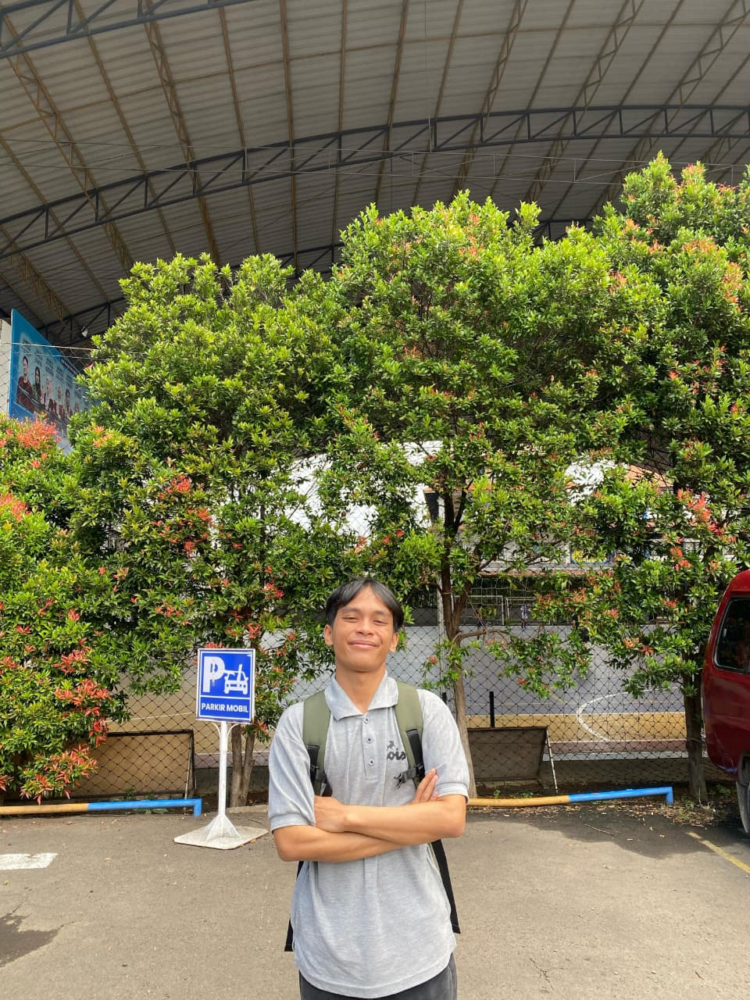

Mahasiswa Komputerisasi Akuntansi @ Universitas Ma'soem
| Nama | : Dimas Luqmanul Hakim |
| Instansi | : Universitas Ma'soem |
| Prodi | : Komputerisasi Akuntansi |
| Lokasi | : Bandung, Jawa Barat |
"Menjadi mahasiswa adalah kesempatan emas untuk bereksplorasi tanpa batas. Di era teknologi ini, kreativitas dan kemauan untuk terus belajar adalah kunci utama. Jangan takut melakukan kesalahan dalam coding atau belajar hal baru, karena setiap error adalah langkah menuju keahlian. Tetap bersemangat, terus berkarya!"